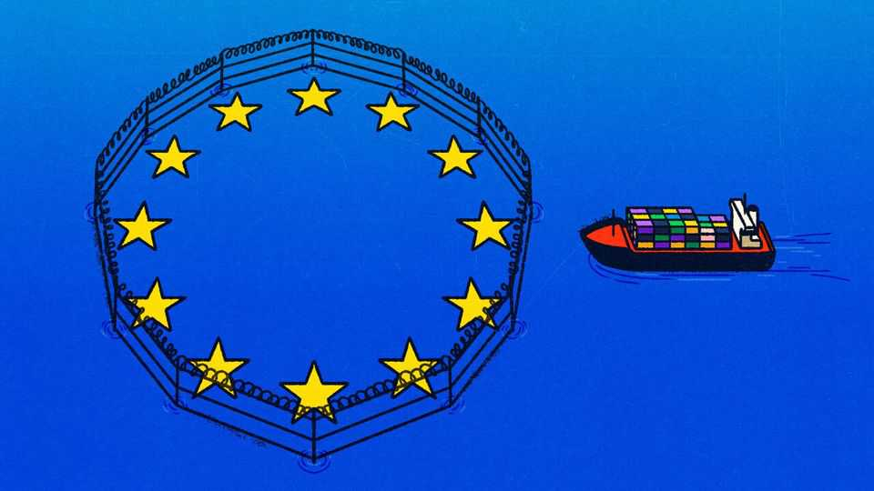
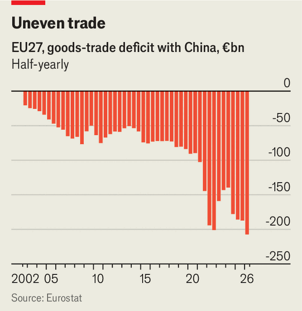

Germany and France want EU storm gates for China’s trade surge
A bold joint letter suggests confrontation looms with China

Oct 8th 2026
IN CHINA’S eyes, Europe is weak and divided. It has neither the prowess to compete in technologies like artificial intelligence nor the military strength to defend itself. Its economy depends on Chinese rare earths and other supplies, and its companies are no match for their Chinese rivals’ innovation. Endless elections and diverging interests prevent the eu from building a united front. In the escalating trade spat between the two powers, why would China make any concessions?
That was the starting point from which the eu embarked on trade negotiations with China in June. Its grievances are legion. Chinese firms threaten Europe’s industry with superior products and lower prices. That, Europeans allege, is in part the result of unfair subsidies and an undervalued currency. Nor is China willing to share its technology when investing in Europe. Then there is China’s weaponisation of its control over critical inputs, such as rare earths, needed by defence firms, among others. China’s support for Russia’s war in Ukraine also infuriates Europeans.
The final round of talks began on October 8th, as The Economist went to press. To boost the EU’s negotiating position, on October 5th France and Germany sent an astonishing letter to the European Commission with far-reaching proposals on how to deal with China’s export machine (without mentioning the country). Next week a summit of European leaders will decide whether to follow the pair’s lead. Most are expected to fall into line.
More than anything it is a change of mind in Germany that has inspired this new European hawkishness. German politicians have long avoided any confrontation, even as parts of German industry grew sceptical of China. But with Chinese exports now bunging up Germany’s industrial machine, this year has seen a dramatic shift. “There is a wide consensus now that things cannot continue like this,” says Oliver Richtberg of the vdma, Germany’s association of machine makers. German policymakers also fear that the persistent loss of industrial jobs—which stands at around 15,000 a month—risks bolstering support for the right-wing Alternative for Germany. As if to underline its resolve, on October 7th Germany’s government blocked a state-owned Chinese shipping giant from acquiring an 80% stake in a German logistics group.
If implemented through the eu’s lawmaking apparatus, the proposals in the Franco-German letter would mark a dramatic shift in the bloc’s approach to China. The main novelty is a “second-strike capability”, says Sander Tordoir of the Centre for European Reform, a think-tank. Emmanuel Macron, the French president, and Friedrich Merz, the German chancellor, want to grant Brussels powers to hit back quickly at countries that retaliate when the eu imposes trade measures over allegedly unfair competition. The pair call for “regulating access to the single market” with a “wide range of trade remedies and other tools”. The proposal looks awfully vague. But “it is a political signal to show Beijing that Europe, and Germany, mean business,” says a German official.
A second proposal is for a “diversification instrument”. Details are also scant, but the idea is to reduce European firms’ supply-chain dependencies and prevent new ones from emerging. Previous attempts have struggled: China can simply build components, then send them for final assembly in other countries. That can even increase risk for European firms. “You still have China risk in the supply chain, but now a new country risk on top,” says Martin Sebena of the University of Hong Kong. To better understand Europe’s vulnerabilities, firms and governments would need to share sensitive data across the eu. But the letter is silent on that.
Other proposals are familiar. In line with the eu’s recent trade agreements (some of which France rejected), the letter urges co-operation with third countries to boost supply-chain resilience. France and Germany call on Brussels to use existing trade-defence instruments more aggressively. The current rules for imposing tariffs in case of unfair subsidies are narrow in scope and cumbersome to impose. The pair want to speed things by staffing up the commission’s trade desks and, importantly, broadening the rules to apply to whole sectors rather than individual firms.

The letter also proposes reforms to “safeguards”: counter-duties that can be imposed on all countries when imports surge. Since safeguards are time-limited, earlier this year the eu had to replace its measures on steel imports with a dedicated regulation. Trade analysts reckon that reformed safeguards could also target individual countries, which in most cases will mean China. And the letter calls for more enforcement of eu regulations on imports, for example on consumer safety, including on the many small packages Europeans order from China.
France and Germany also want a European industrial policy, but, officials say, differ on its scope. The letter says the eu should expand production in “strategic” sectors and introduce Buy European clauses (“European preference”, as they call it). But they remain vague on what sectors these might be, and whether close economic allies would be included. This is where free-traders in Europe see room to prevent the worst protectionist instincts.
All of this will irk leaders in Beijing, as France and Germany well know. The Chinese commerce ministry said that the pair should “avoid taking a wrong road by wrong means and ultimately having it rebound on themselves”. To prove a point, on October 3rd it launched an anti-dumping investigation into European chemicals exports, after Europe had opened three such investigations aimed at China last week. Europe is braced for more.
For its part the commission called the letter a “valuable contribution” that aligns with its “clear stance on competitiveness and the approach to trading partners, including China”. Europe’s free-trading nations, many of which welcome Germany’s tougher stance, will have to ensure that the eu does not allow legitimate concerns about economic security to tilt into damaging protectionism.
One aspect works in Europe’s favour. Its economy has proved more resilient to the recent energy shock than many expected. China, on the other hand, has just decided to put together another massive infrastructure package to stimulate its troubled economy. The eu hopes that its new resolve will dissuade China’s leaders from escalating further, and that they will avoid emboldening Europe’s hawks just as Germany has joined their flock. ■